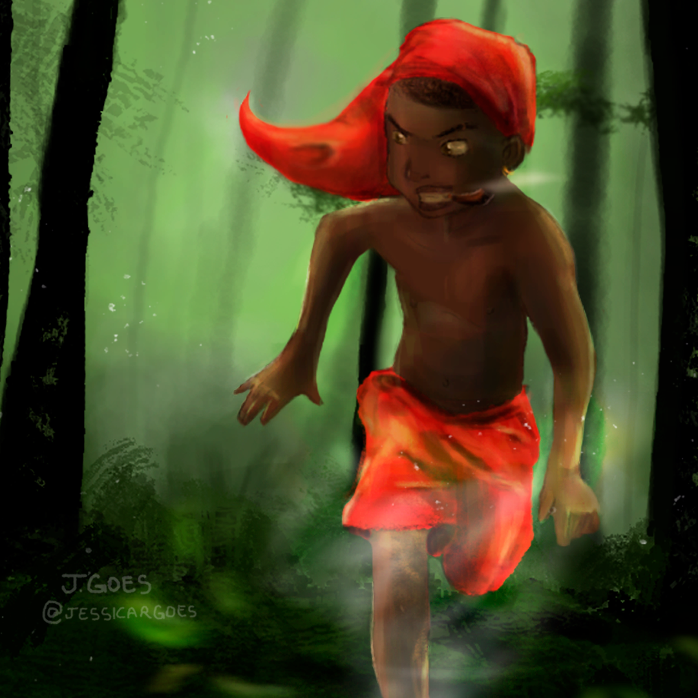
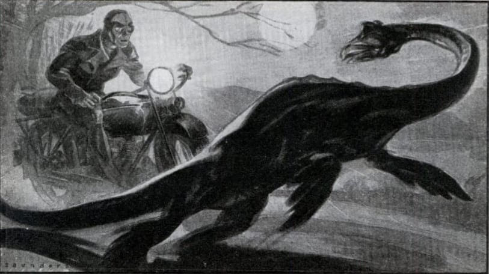

As lendas são histórias transmitidas ao longo das gerações, muitas vezes com uma base real, mas com elementos fantásticos ou sobrenaturais adicionados. Elas fazem parte da cultura de muitos povos e ajudam a explicar mistérios ou fenômenos da natureza.
Muitas lendas refletem os valores, medos e aspirações das comunidades que as criaram. A Importância Cultural das Lendas: cada lenda traz consigo um pouco da história e da identidade de seu povo. Elas servem para educar, advertir ou entreter. Por exemplo, no Brasil, temos o famoso folclore com figuras como o Saci-Pererê, a Iara e o Curupira, que representam o respeito pela natureza e o mistério das florestas.
Exemplos Famosos de Diferentes Culturas
Saci-Pererê (Brasil): Um travesso garoto de uma perna só, que adora pregar peças e possui uma carapuça que lhe dá poderes.

Imagem ilustrativa do Saci-Pererê
A lenda do Saci-Pererê varia entre as regiões do Brasil. Em algumas versões, ele é descrito como um jovem indígena, enquanto em outras é visto como um ser africano, devido à sua carapuça vermelha.
A Lenda da Dama de Branco (México): A história de uma mulher fantasmagórica que vaga chorando por seus filhos perdidos.
Imagem ilustrativa da Dama de Branco
A versão mais famosa, conhecida como "La Llorona" no México, fala de uma mulher que, após perder os filhos, chora enquanto vagueia à procura deles. Dizem que ouvir o choro dela traz azar ou até mesmo perigo.
O Monstro do Lago Ness (Escócia): Um misterioso ser aquático que supostamente vive no Lago Ness, despertando a curiosidade de exploradores do mundo todo.

Imagem ilustrativa do Monstro do Lago Ness
O monstro foi mencionado pela primeira vez no século VI, mas ganhou fama global em 1933, quando fotos e relatos começaram a surgir na Escócia.